Sistemas de gestión a medida
Software pensado para centralizar tareas críticas y mejorar el control diario del negocio.
- Ventas, stock, clientes y reportes
- Procesos adaptados a tu operación real
- Base ordenada para decidir con más claridad
Estudio de desarrollo de software y soluciones web a medida
En WebSign creamos sistemas de gestión, aplicaciones web, plataformas internas y sitios corporativos para negocios, empresas e instituciones que necesitan ordenar procesos, ganar eficiencia y trabajar con una base tecnológica sólida.
Soluciones principales
Nos enfocamos en resolver necesidades operativas y comerciales concretas con software a medida, aplicaciones web y presencia corporativa profesional.
Software pensado para centralizar tareas críticas y mejorar el control diario del negocio.
Herramientas para digitalizar tareas, automatizar circuitos y conectar equipos con información confiable.
Soluciones para administración académica, organización interna y gestión de procesos institucionales.
Sitios institucionales y comerciales que mejoran la presencia profesional de la marca y acompañan objetivos concretos.
Servicios complementarios
Estos servicios no lideran nuestra propuesta, pero pueden sumar valor cuando forman parte de una solución más amplia.
Casos reales
Priorizamos los casos donde el desarrollo a medida resolvió procesos reales, mejoró el control operativo o profesionalizó la presencia digital de cada organización.
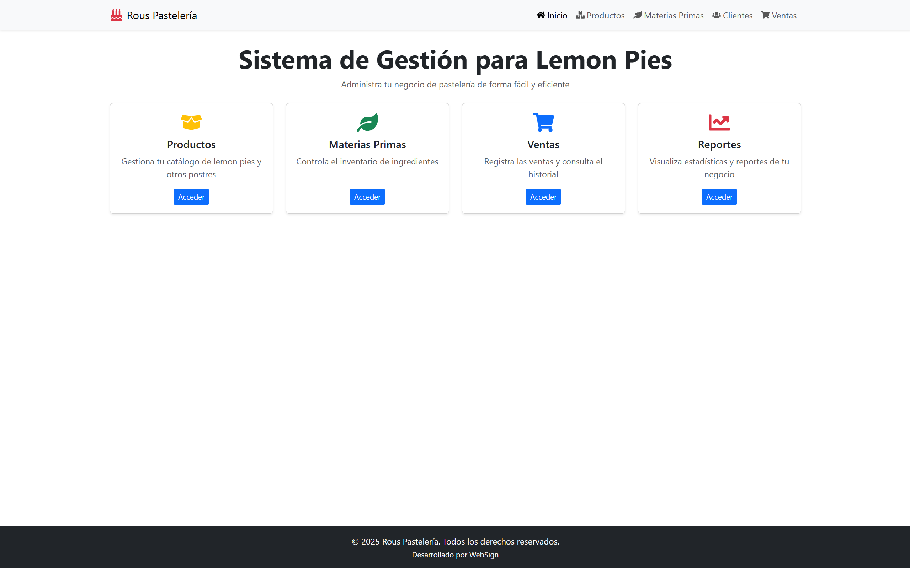
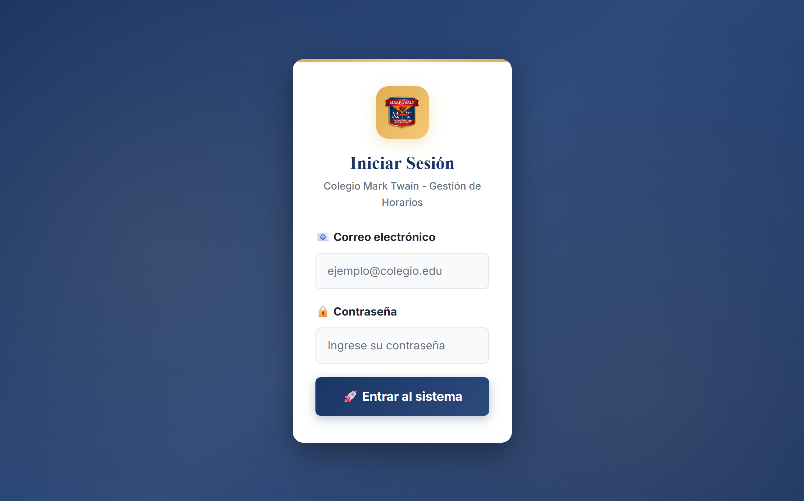
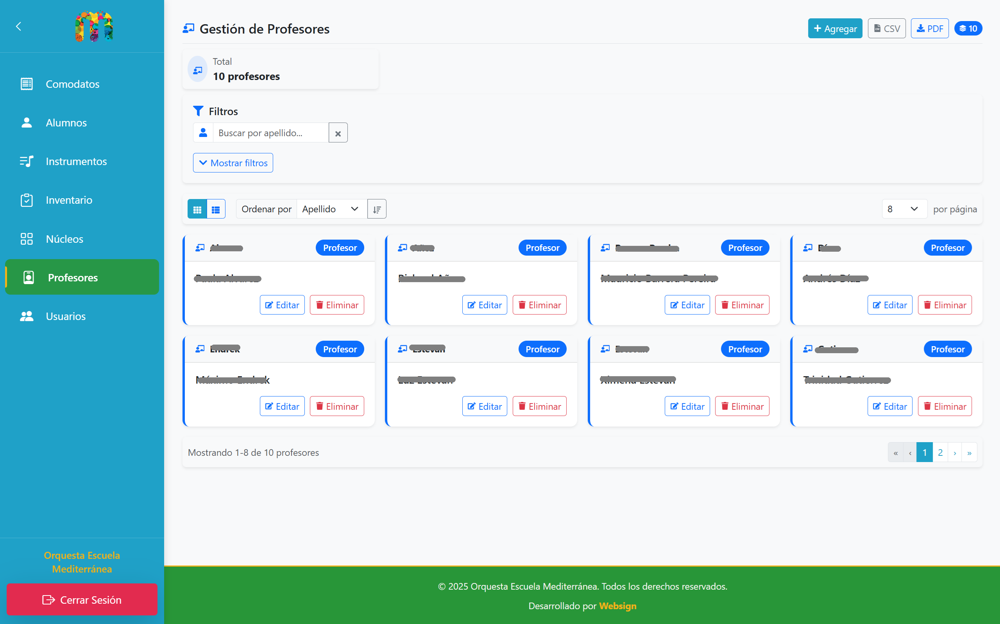
Otros proyectos implementados
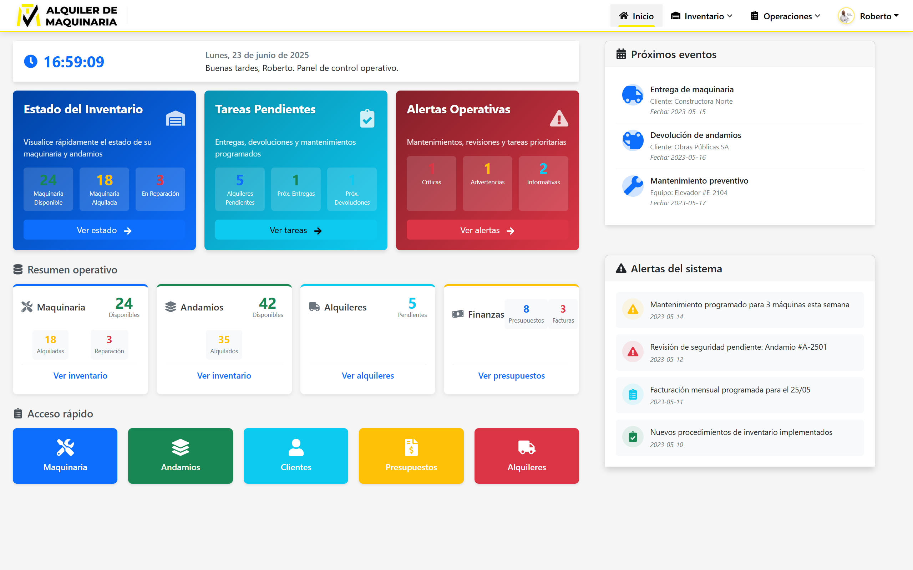
ERP a medida en desarrollo para centralizar procesos de múltiples compañías y acompañar el crecimiento operativo del grupo.
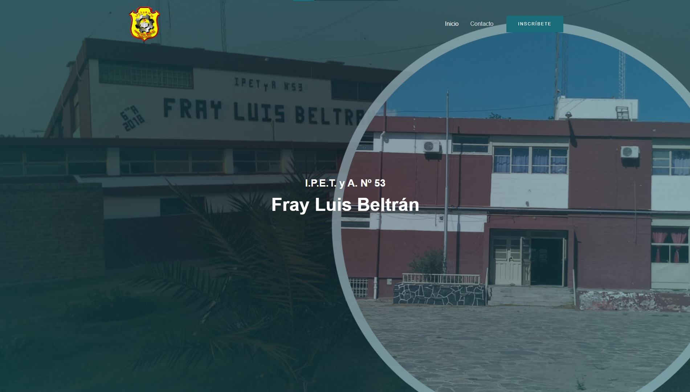
Sitio institucional e implementación de dominio .edu.ar y Google Workspace para fortalecer presencia y comunicación.
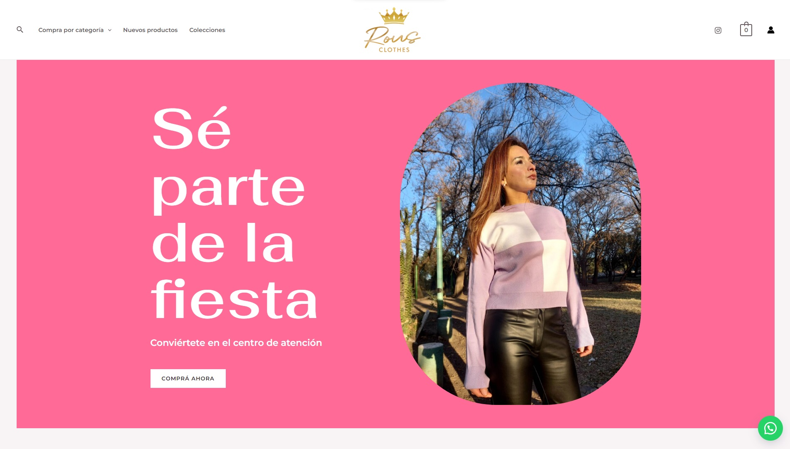
Tienda online para venta de indumentaria con experiencia de compra clara y catálogo digital administrable.
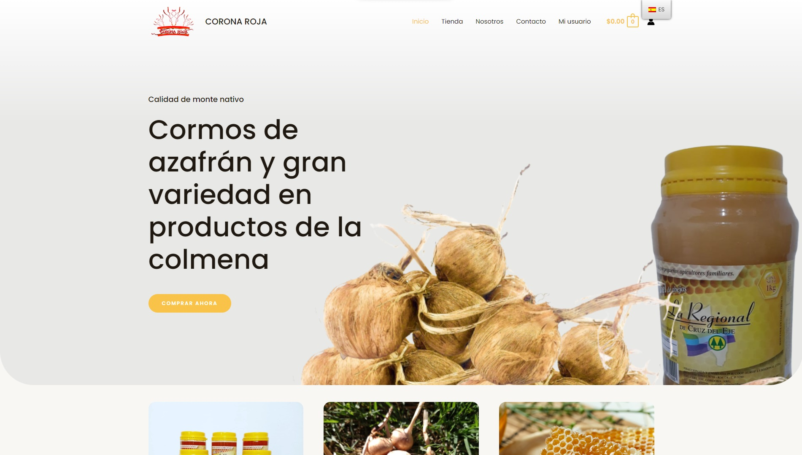
Proyecto e-commerce con foco en gestión de productos, ventas online y presencia comercial más sólida.
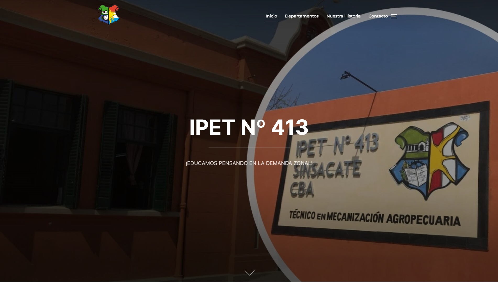
Sitio institucional y acompañamiento en implementación de infraestructura digital para la comunidad educativa.
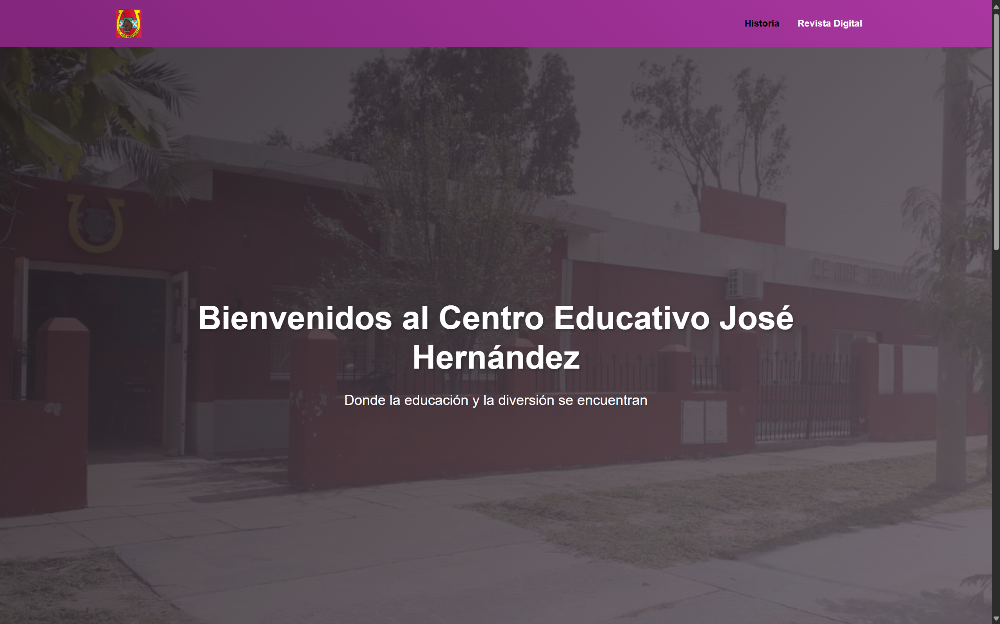
Web institucional, dominio .edu.ar, Google Workspace y acompañamiento para iniciativas de trabajo digital estudiantil.
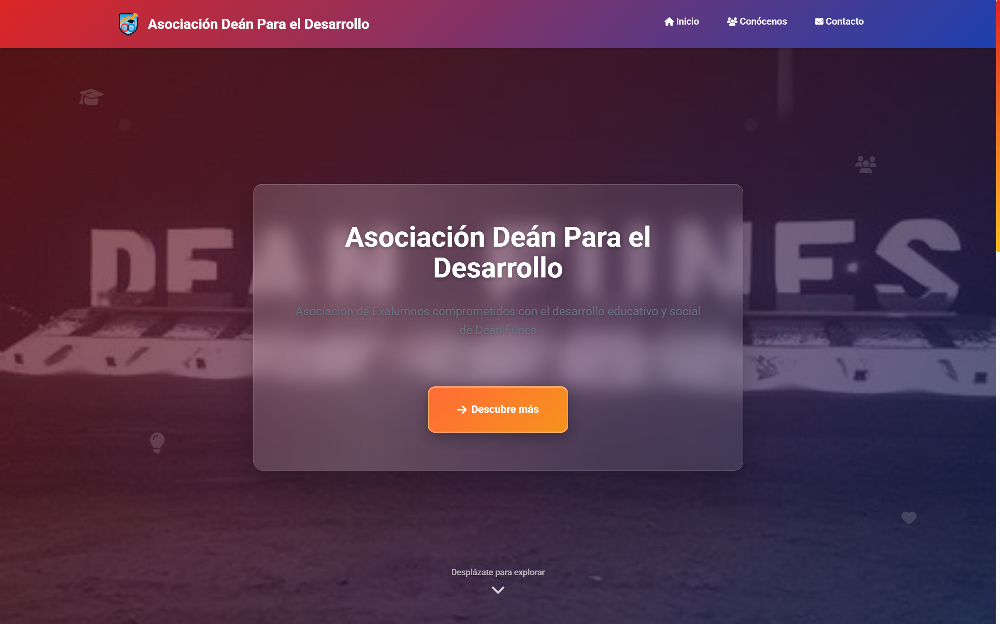
Sitio institucional moderno para una organización con necesidad de presencia clara y comunicación profesional.
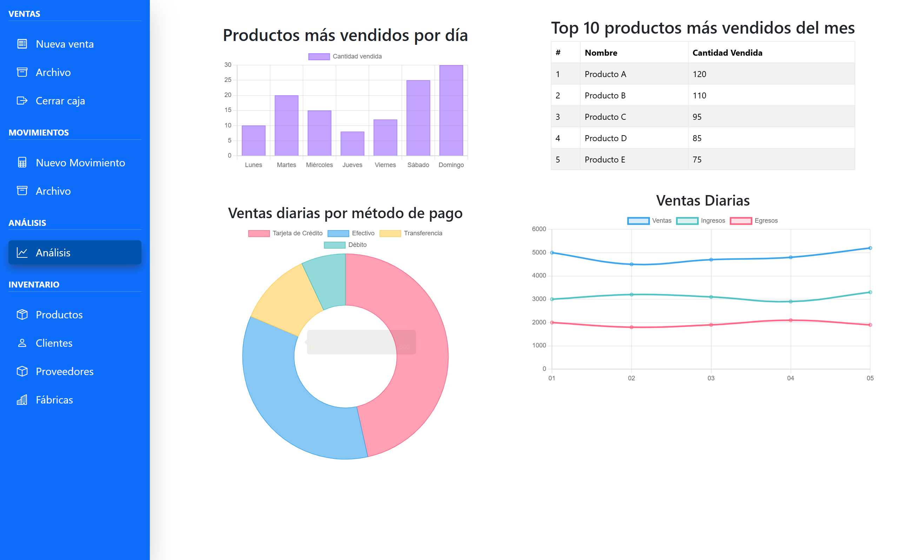
Producto propio orientado a pequeños negocios para acompañar ventas, clientes y operaciones desde una base simple.
Por qué trabajar con WebSign
No armamos soluciones genéricas. Diseñamos herramientas digitales pensadas para resolver necesidades reales y sostenerse con el tiempo.
Antes de desarrollar buscamos comprender cómo funciona tu operación y dónde está el problema a resolver.
Cada proyecto se define según objetivos, contexto y necesidades reales, no a partir de paquetes cerrados.
Construimos herramientas claras para el usuario, robustas para operar y útiles para tomar mejores decisiones.
Priorizamos orden técnico, escalabilidad y mejoras futuras para que la solución siga siendo valiosa en el tiempo.
Cómo trabajamos
El objetivo no es solo desarrollar, sino ayudarte a tomar mejores decisiones sobre qué construir, en qué orden y con qué alcance.
Analizamos tu necesidad, el contexto del negocio y los procesos que hoy necesitan mejorar.
Definimos la solución, el alcance del proyecto, prioridades y los siguientes pasos más convenientes.
Construimos la herramienta con foco en funcionalidad, claridad de uso y adaptación a tu operación real.
Ponemos la solución en marcha, acompañamos su uso y evaluamos mejoras futuras cuando el proyecto lo requiere.
Iniciar una consulta
Si necesitás un sistema de gestión, una aplicación web, una plataforma interna o un sitio corporativo con una base más profesional, podemos ayudarte a definir el mejor camino.
Analizamos tu caso y te proponemos un siguiente paso claro.
Respuesta estimada dentro de 24 a 48 horas hábiles.